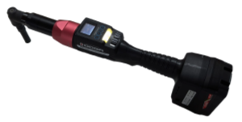

Doga BM/BMH/BMT-series wireless tools
The Doga BM/BMH/BMT-series wireless tools use Modbus/TCP for controlling tightening operations and reporting events, data and graphs. Also PSet modification are possible over Modbus/TCP.

OGS provides the heDogaTool.dll to implement the Doga communication protocol.
Installation and configuration
Installation
For OGS versions < V3.0.9, the Doga tool driver is not included in the OGS installer, so the heDogaTool.dll must be copied manually into the OGS installation folder (usually c:\program files(x86)\Bosch Rexroth AG\OGS V3.0).
OGS project configuration
The Doga driver is implemented in heDogaTool.dll. To use it with OGS, the driver must be loaded in the [TOOL_DLL] section of the projects station.ini configuration file (see also Tool configuration).
A typical configuration of the [TOOL_DLL] section looks like the following:
[TOOL_DLL]
; Load and enable the Doga tool interface DLL:
heDogaTool.dll=1
; ... other tool drivers ...
Tool registration and configuration
All Doga-tools are registered in the [DOGA] section of the projects station.ini file.
The [DOGA] section mixes the tool parameters and the channel mapping (due to historic reasons) by combining the channel number and the parameter name/value in the station.ini entry.
Each parameter is prefixed with the channel number and followed by parameter name as follows:
CHANNEL_<two-digit channel>_<param name>=<param value>
Where
- <two-digit channel> is the channel number in the range 01...99 (the channel number maps 1:1 to the tool number from the workflow configuration)
- <param name> is the parameter name (see below)
- <param value> is the actual parameter value for the given parameter
Valid parameters (<param name>) are:
CHANNEL_<channel>: Define the IP address used to communicate with the tool.CHANNEL_<channel>_PORT: Define the Modbus/TCP port number (note, Doga uses port 5000 instead of the default 502) for Doga communication.
A sample OpenProtocol tool configuration (channel 01) would therefore look similar to the following:
; Setup Doga tool channels
[DOGA]
; Define communication parameters for OGS tool #6
CHANNEL_06=10.10.2.112
CHANNEL_06_PORT=5000
; ... more tools ...
Tool data output
Like other tools, the Doga tools can use the OGS buit-in connectivity options to send out data and curves (Traceability data) to backend data management systems (like ToolsNet, CSP I-P.M., Sciemetric QualityWorX, QualityR, etc.).
To understand the system architecture and details on how to use data output in general, please see OGS Traceability. To setup Traceability for Doga tools, enable Traceability and add the Doga tools channel to the list of channels in the [FTP_CLIENT] section.
Here is a sample setup:
[FTP_CLIENT]
Enabled=1
;...
; (more settings)
;...
; Parameters for each channel:
CHANNEL_06_INFO={ "ChannelName": "WS010|AC_PF6000", "location name": ["Tool", "Line 2", "WS010", "default", "", "", ""] }
The following parameters are required for the Doga tools, as the tool does not provide them through its interface:
ChannelName: Defines the station and channel name seperated by a pipe symbol (<station>|<channel>).location name: Defines the location name values to use. Note that this setting depends on the Sys3xxGateway settings for processing the tightening results. Make sure to add the relevant information (like data link name, building, line name, etc.), so the tool can be registered in the correct organizational unit.
NOTE: Currently documentation for curve output of the tool is not available from Doga. Therefore curve/graph output is not available in the traceability output yet.
Tool configuration
Prerequisites
The BM/BMH/BMT-series wireless tools are configured using the ParaMonEx software (available on request from the Doga support). The firmware version of the tool must be >= V4.00.2.
WARNING: Firmware versions < V4.00.2 are not supported by OGS, as they use an incompatible Modbus register mapping! This also applies to the Doga configuration software: DO NOT USE ParaMon or ParaMon III to configure the tools, only use ParaMonEx!
Control parameters
The recommended settings for the tool using ParaMonEx are:

The following parameters should be set in the Controller section (please note, that due to translation issues, the term driver is used instead of tool):
- Event data select: Only enable
Fastening OkandFastening Nokto prevent overwriting the result buffer with other data - Driver auto lock: Set to
ONto automatically disable the tool after a rundown. - Initial Preset/model # when power on: Set to zero to prevent the tool after reeboot to operate without control.
- Error display reset time: Set to zero to block the tool until the error has been acknowledged. As the tool throws an error also for a NOK tightening, this would else allow unacknowledged NOK rundown to slip through without notice.
- Auto data output: Set to
OFFto disable spontaneous data output (as this violates the Modbus protocol and can interfere with other communication). - Driver lock after Wifi disconnect: Set to
ONto disable the tool automatically, if the Wifi communication gets lost.